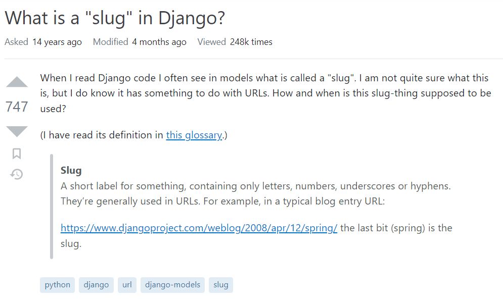
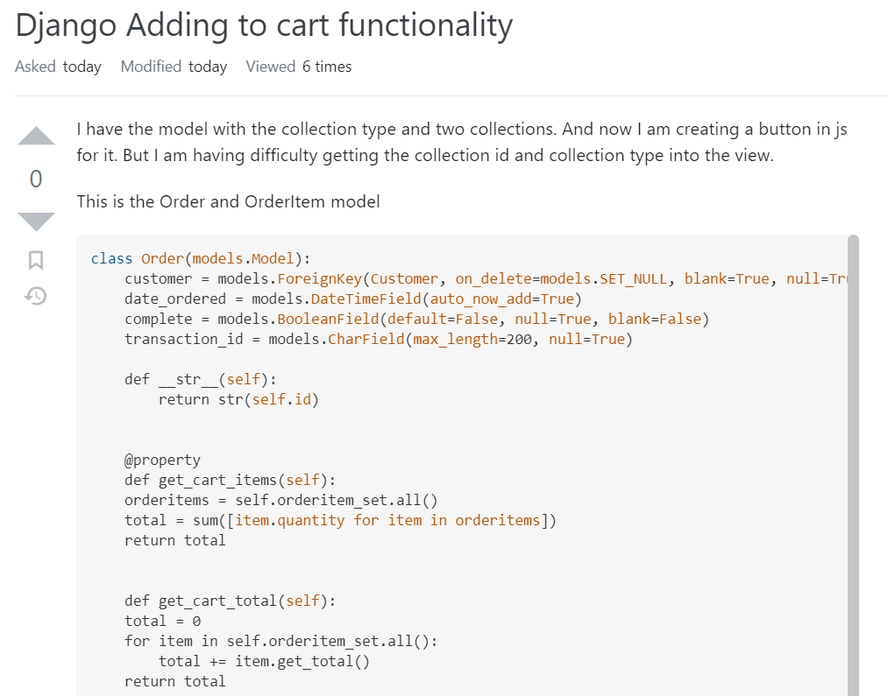

Hacker Community Guidelines
26 Jan 2023
“How To Ask Questions The Smart Way” by Eric Steven Raymond are unwritten community guidelines for hackers. These are not specific rules to any one forum, but more a collective attitude hackers have towards one another and the standards they hold members in their community to. This was a great perspective to learn about, and will serve me well as a software developer. Although not a seasoned hacker, I will participate in these communities asking for assistance in my projects. Abiding by the guidelines asserted by Raymond will surely allow me to maximize the use I get from these forums, and minimize the unease experienced when the rules aren’t followed.
The typical transaction on these forums go as follows: A member asks a question to the open public. Depending on the validity, potential outreach, and weight of the question you may entice a subject matter expert browsing the forum to offer his assistance. The likeliness of a member getting their question answered is drastically increased if it is asked in a “smart” manner. “Smart questions” are the topic of Raymond’s article. He explains how to ask a question the “smart way” and the “not smart way”. The difference between the two can leave a hacker “grateful and excited for an interesting question to chew on” or “reacting as if a pile of steaming pig manure was dumped on their door”, as Raymond puts it.
Smart Question

Question Link
This is an example of a good question. This is a theoretical and intuitive question which I think is a great question to ask people with experience (and apparently the community does too, up-voting it 747 times). Design decisions can’t be found in the manuals and depending how niece, can’t be found in textbooks either. It is great to ask the pros “I know how this is done, but why do you do it, and why wouldn’t you do it”? Additionally, the title is short and concise and conveys what the person is asking. The question itself gets straight to the point and asks with a “what does this feature do for us developers and consumers” tone. He also clearly states his level of understanding by linking the Django definition of “Slug”. This shows he did some background research in the appropriate place: the manuals, and has still come short of an answer to his question. I would personally give this question a thumbs up, because I remember learning about slugs and didn’t understand why they’re more beneficial to use versus an integer in the URL that is merely incremented. There are user readability and security reasons they are used to generate dynamic webpages, which is not immediately evident for beginner web developers.
Not Smart Question

Question Link
This is an example of a bad question. I found it in the recent questions, and just by looking at it there are some aspects that Raymond would find troubling. First off, the title sucks. “Adding to cart functionality” does not concisely portray the problem and is much too vague. Secondly, the question itself has way too much text. The user does summarize their question to a debatably acceptable level in the actual post (trust me I’m the authority here, I have 214 reputation points), but then proceeds to post three long pages of code instead of a “minimal test case”. A minimal test case is an illustration of the problem, just enough code to exhibit the undesirable behavior and no more. This crazy lunatic is clogging up the form with his console.log statements. Now that is just plain lazy (but hey what do you expect, the user only has 1 “reputation” point and is a “new contributor”). Thirdly, I would like to mark him down on the simplicity of the actual question. He is essentially asking how to pass data from the front-end using javascript, to the back-end (which uses python). This is a very common procedure and Django (the web framework he is using) has some of the best documentation out of any framework I’ve ever seen. I know for a fact some web surfing and document surfing would find him the answer. This is not an original problem that warrants a blog post on stackoverflow. RTFM. STFW.
Summary
The ability to ask “smart questions” is very important for software developers. It is too big of a task to memorize all the information a software developer needs to do their job. But they always need to know where to find the information. A very popular source are hacker forms. A good software developer needs to be able to ask good questions in order to efficiently retrieve the information they need to do their various programming jobs. Asking good questions can merely mean knowing the right keywords to enter into a google search bar, or asking the questions first hand in a post on the form. Either way, a “smart” question must be asked, and a “not smart” question probably won’t yield you the answer.